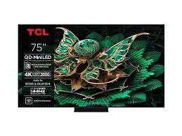

TCL 75C7K هو تلفزيون ذكي (Smart TV) من الفئة المتقدمة، بيجمع بين حجم شاشة كبير (75 بوصة)،
تقنية QD-Mini LED المتطورة، أداء ممتاز في الأفلام، الألعاب، والمشاهدة اليومية. لو عايز شاشة ضخمة لغرفة المعيشة،
أفلام ومسلسلات،
أو ألعاب ده خيار قوي جدًا يعطي صورة مشرقة، ألوان حقيقية، وصوت مقبول.